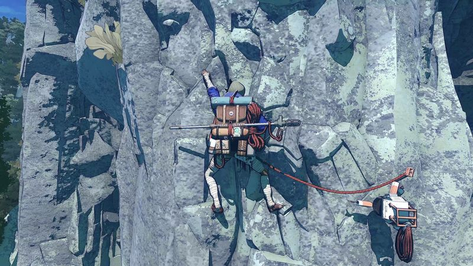
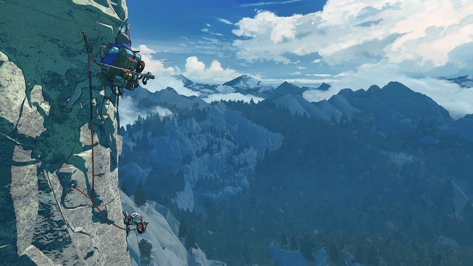

The thirty-second version
Beautifully mean. We love it.
This is the first game to accurately simulate looking at a shelf and pulling something in our back.
Cairn is a deliberate, tense, quietly beautiful game about going up a mountain that does not want you. Every hold matters. Every piton counts. It's the sort of game we thought we didn't have the patience for anymore, and then it grabbed us by the collar and taught us that we did.
Okay, what is this thing?
You play Aava, staring up at Mount Kami, which is a mountain that has never been summited and, from the look of it, has strong opinions about being summited. Then you plan the route. Then you climb. Then you sit at a ledge and stare at the drop and take a breath before the next section, which is when the game gets its hooks in. The Game Bakers make deliberate, moody things, and this is the most deliberate one yet.
Mechanically it's a resource game as much as a climbing sim. You've got limited pitons, limited stamina, and a whole mountain to spend them on, and every pitch is a question about how much to spend now vs. what you'll need higher up. It's slow in the best way, and every risk you take has an actual consequence. This is not a game you play with a podcast on. It's a game you play with your mouth slightly open.


Why it escaped the group chat
- You play as Aava, taking on Mount Kami, a peak the game insists has never been climbed.
- From The Game Bakers, who made Furi and Haven, which tells you the mood.
- Every ascent is a resource puzzle: pitons and stamina you cannot get back.
Three dads enter
01
Dad Who Skipped the Tutorial
The mountain doesn't care about me personally.
I tried to climb by vibe and the mountain politely disagreed. I watched the other two play for a while and I can report that the animation of a piton going in is 'weirdly satisfying,' which is high praise from a man who bounced off Death Stranding twice. I'll come back on a weekend for the calm bits.
02
The Descent Guy
A mountain that rewards drawing the ascent on paper.
I drew the whole first face on graph paper and picked my piton spots before I started. It worked, which was worse for everyone else than if it hadn't. Cairn is a game about spending resources you can't refund on a route you can't redo, and I'm a man who lives for exactly that decision.
03
Normal-ish Dad
It's slow, and that's why it's good.
You'll spend forty minutes on one pitch and then twenty minutes staring at the horizon before you start the next one. That's the game. I found it genuinely calming after a long week, which surprised me, because I'd mostly assumed a climbing game would give me neck ache. It does, but in a good way.
Who it is for and what to watch
Invite these people
- Anyone who liked the pace of Death Stranding but wanted less package logistics
- Solo players who want a game to slow their pulse, not spike it
- People who own a nice pair of headphones and rarely use them
Dad caveats
- Deliberately slow; if you want power fantasy this is the wrong hobby
- Falls take you meaningfully backwards, which is the whole point
- You will crick your neck looking up at your monitor; blame ergonomics, not the game
Receipts
Played solo on PC by two of us across several evenings, with the third briefly picking it up, refusing to plan a route, and paying for it. Details cross-checked against the game's Steam listing.